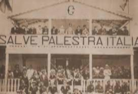
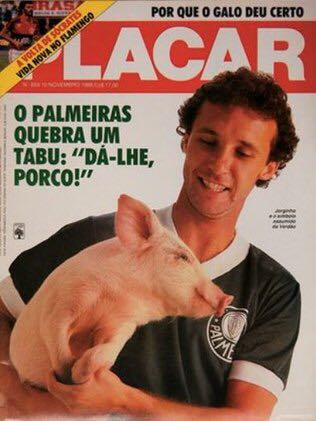

História do Apelido Porco do Palmeiras
Nos clubes de futebol é muito comum a torcida ter algum apelido, no caso do palmeiras um de seus apelidos é o Porco, mas onde será que surgiu esse apelido e por que?
Existem dois motivos fundamentais para esse apelido. Um se dá por um dos episódios mais tristes da história da humanidade, a Segunda Guerra Mundial, e o outro é fruto de um dos maiores clássicos do Futebol Mundial, o famoso Derby.
Em relação á Segunda Guerra Mundial
Após o Brasil se aliar aos Estados Unidos, que declarou guerra ao regime fascista italiano, houve uma rigorosa repressão aos imigrantes italianos que viviam no Brasil naquela época sendo xingados de porcos, o que era, até então, uma grande ofensa, por ser referência a um animal sujo, que vive na lama. Na mesma época o Palmeiras precisou deixar de ser chamado de Palestra Itália.
Reprodução/Palmeiras.com.br
Em relação ao Derby
Já a história mais popular aconteceu em 1969, quando dois jogadores do Corinthians, Lidu e Eduardo,morreram em um acidente de carro. O prazo de inscrições de atletas já tinha sido encerrado e devido a fatalidade, o clube foi atrás da Federação e dos demais times para conseguir uma autorização e assim, inscrever dois novos atletas no Campeonato Paulista.
Para a decisão ser válida, todos teriam que concordar e foi isso que quase aconteceu, mas o dirigente do Palmeiras foi contra e não deixou o Alvinegro ir adiante.
A partir desse veto, os corintianos começaram a usar o termo Porco no pejorativo, em alusão ao “espirito de porco” e sujo que o Palmeiras teve perante a tragédia. Os palmeirenses ficaram alguns anos ouvindo gritos de Porco nos estádios de vários clubes que repudiaram a iniciativa dos palestrinos.

Reprodução/terceirotempo.uol.com.br
A Oficialização do Porco
Só em meados da década de 80, o diretor de marketing daquela época, João Roberto Gobbato, decidiu usar o apelido dado pelo arquirrival como identidade do Verdão. Mesmo assumindo o porco, a torcida demorou alguns anos para abraçar a ideia.
Reprodução/Placar
Só em 1986 que os palmeirenses adquiriram o termo e os gritos: Da-lhe Porco foi ecoado das arquibancadas do Pacaembu, no jogo contra o Santos.
Confira os melhores momentos da 'estreia' do Porco.
O Novo Mascote
Recentemente em 2016 a diretoria palmeirense adicionou o mais novo mascote Porco Gobbato, referenciando a João Roberto Gobbato.

Reprodução/Gazeta Press
Então é isso! Espero que tenha gostado do nosso artigo com essa curiosidade sobre o apelido do Palmeiras e o novo mascote.